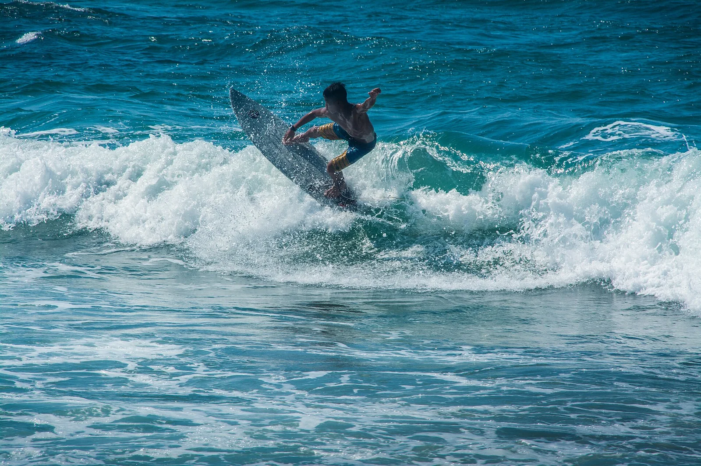

Urbiztondo — San Juan
La Union, Philippines · surf

Capitale du surf du nord de Luçon : une plage de sable sombre bordée d’écoles de surf. Les vagues sont surtout régulières d’octobre à mars, avec la mousson de nord-est.
- Lieu
- La Union, Philippines
- Niveau
- Débutant
- Activités
- surf
- Type d'eau
- Mer / océan
- Coordonnées
- 16.66, 120.32 (position approximative du secteur)
Dangers à connaître
- Courants le long de la plage quand la houle grossit.
- Typhons possibles, surtout de juin à novembre : surveille les bulletins.
Le conseil d'Ocean Buddy
Débute sur le beach break avec une école et laisse les vagues de récif voisines aux surfeurs confirmés.
Ouvrir dans Ocean Buddy Télécharger sur l'App Store
Source : Fiche Ocean Buddy · septembre 2026 · à vérifier localement.